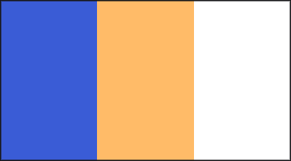

Image format · draft 0.1
Vitral
PNG has transparency. Vitral has light and filter: an image that carries its own blend modes and reacts to whatever is behind it.
Image format · draft 0.1
PNG has transparency. Vitral has light and filter: an image that carries its own blend modes and reacts to whatever is behind it.

01Live comparison
Drag the image, or focus it and use the arrow keys. Both views show the same .vitral.png file.
02How it works
A Vitral file stores how each pixel looks over black and over white. Over any other backdrop, each colour channel lands on the straight line between those two values.
That one line covers normal, multiply, screen, hard light, exclusion and inversion, mixed freely pixel by pixel. To draw it, a renderer stacks three layers with blend modes that every browser and design tool already has: difference, then screen, then multiply.
| Blend mode | In draft 0.1 |
|---|---|
| Normal, multiply, screen, hard light, exclusion, inversion | exact |
| Add (plus-lighter), linear burn, darken, lighten, difference | approximate |
| Overlay, soft light, colour dodge and burn, hue, saturation, colour, luminosity | planned for v2 (layers) |
| Background blur, refraction | planned for v2 (backdrop effects) |
Approximate modes are exact over black and white backdrops and follow a straight line in between: add behaves like screen, difference like exclusion.
03Use it on a website
A Vitral file is a valid PNG, so the page works without JavaScript and shows the fallback. With the script, every <img> whose file ends in .vitral.png starts blending. As with CSS mix-blend-mode, the image blends with content in its own stacking context.
<img src="window.vitral.png" alt="Stained glass window">
<script type="module" src="vitral.js"></script>04Make one
Put a black background behind your artwork and export a PNG, then switch it to white and export again. Layers keep their blend modes against the background, so these two exports hold the blending. A third export with a transparent background records each pixel's own colour, shown where nothing is behind the image and by software without Vitral support. The example below is loaded with the colour gels exports.